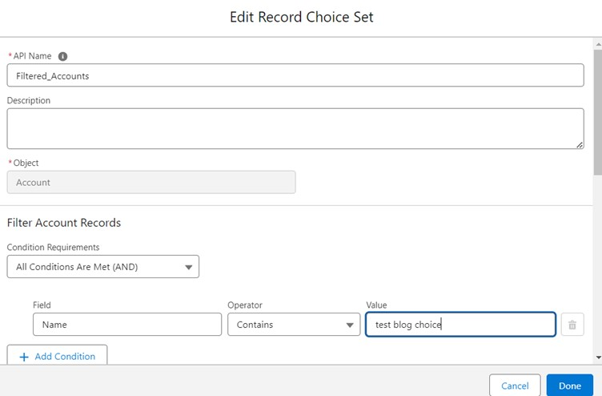
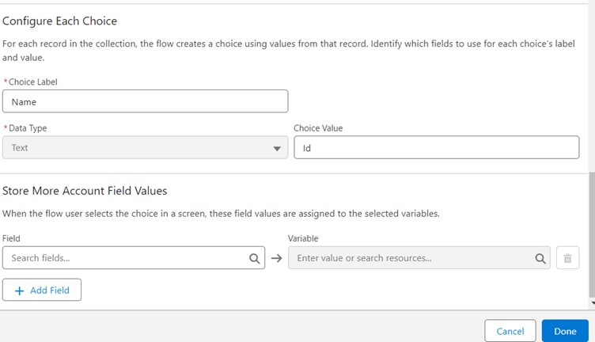
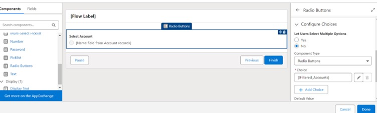

How to use Lookup in Field Service(FSL) Mobile flow
Sahil / July 7, 2024 / Field Service Mobile, Salesforce Field Service, FSL Mobile Flow Components
Unfortunately, lookups or Lightning Components (Dependent picklist or Lookup) are not yet supported in Salesforce field service Mobile flow’s screen component.
However, there is an alternative which can be utilized to gain same level of functionality needed by lookups…and here is how:
“By Using Record Choice Set”
Let us understand with an example:
Let’s say we need to list of filtered Accounts (Where Name Contains Test Blog Choice) for Contact on flow Screen component and we are going to follow these steps to achieve that:
First, create a New Record Choice Set where Object selected as Account and filter criteria as per requirements.

In the next step, Configure the Record Choice Set by selecting the Choice label as Name and Choice Value as Id.
Note: Label will be visible at the time of selection to the user and Choice value i.e. Id (in this case) will provide the record id of the selected choice.

Next, Create a Screen and Select Radio Button from the list of Components.
- Lookup component will not be available for Field Service Mobile flow.
- Selection of Radio button instead of picklist will provide the filtered list of records in mobile app as well as in flow Debug.
- Picklist will not provide the filtered record in mobile flow, but, it will show the filtered records in flow Debug mode. (which is why we are using Radio Button instead of picklist).
Some points to consider (Components):

Provide a Label as well as an API Name to the component.
Add the Record Choice Set to the Radio button choice.